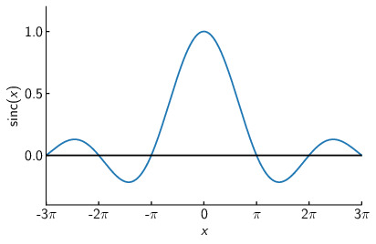
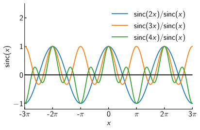
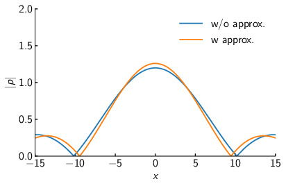
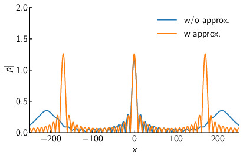

フェーズドアレイについて
Author: Shun Suzuki
Date: 2024-01-06
ここでは, 多数の球面波音源が生成する音場について考察する.
フェーズドアレイから放射される音場
位置にある振動子が生成する音圧場は次の式で与えられる (球面波モデル). ここで, はそれぞれ振動子の振幅, 位相パラメータであり, は波数, は角周波数, は時間である1.
ここで, 次の2つの関数を導入する. このを伝達関数, を振動子のゲインと呼ぶことにする. は振動子の物理的な配置で決まるのに対して, は振動子に印加する駆動信号によってプログラマブルに変更できる.
ここで, 複数の振動子からなるアレイを考える. 各振動子を添字で区別することにすると, これらの振動子が生成する音場は, 全ての振動子の音場の重ね合わせになり, と表される2.
格子状のアレイ
以下では, フェーズドアレイは平面に格子状に並べられた振動子から構成されると仮定する.
NOTE: 実際には, 格子状である必然性はない. 例えば, 3では曲面状に振動子を配置しているし, 4ではさまざまな形状のアレイを生成できるようにしている. さらに変わったところだと, 5ではアレイの配置をFibonacci spiralに沿って配置している. この論文では, Fibonacci spiral配置によりグレーティングローブ (後述) が軽減されると報告している. しかし, ここでは簡単のため平面上の格子配列を考える.
このとき, 振動子は間隔で縦横それぞれ個並べられているとしよう. このとき, は である. ここで, は行列の振動子を表す.
焦点の生成
ある, 位置に焦点を生成したいとする. つまり, を最大化しようとしたときに振動子に与えるべきゲインは明らかに となる. ここで, は振動子の上限振幅である.
このときに, 焦点付近の音場がどうなるか考察しよう. 解析を簡単にするために, いくつかの近似を導入する. まず, 行列の振動子がに置かれているとすると, となる. そのため, となる. ここで十分遠方を考え, が成り立つとしよう. このとき, となる. この近似をFresnel近似と呼ぶ. 同様に, が成り立つならば となる. この近似をFraunhofer近似と呼ぶ. さらに, ここで次の近似を導入する. この近似を近軸近似と呼ぶ.
これらの近似を用いると, となる.
ここで, 焦点を通り, アレイに平行な平面, すなわちの場合を考えよう. このとき, となる.
さてここで, であり, であるから と表される. ここで, である.
したがって, となる.
ここで, sinc関数の挙動を確認しておこう. 以下にのグラフを載せる.

図からわかるようにでになる.
また, 以下にのグラフを載せる.

図からわかるように, でその絶対値が最大値のをとることがわかる.
したがって, はまず, で最大値をとる. その後, 軸方向には, でになる. 同様に, 軸方向には でになる. 従って, x,y軸方向の焦点の幅はそれぞれ, となる. フェーズドアレイの幅が, x,y軸方向にそれぞれであることを考えると, 波長程度に焦点を収束できるのは (フェーズドアレイから焦点までの距離) がフェーズドアレイの幅程度までとなる.
また, は でも最大値をとる. これがグレーティングローブと呼ばれるものである.
以下にの場合の焦点平面のx方向の音場を載せる. 図に見られるように, 焦点周りの音場は比較的精度よく近似されている. しかし, グレーティングローブ周りの近似はかなりずれている事がわかる. これは, , 及び近軸近似が成り立たないためである.


より現実に近いモデルとして, さらに振動子の指向性や空気の吸収による減衰などを入れたものがある.
音速の変化等はとりあえず考えない. また, あくまで線形の範囲に絞る.
Marzo, Asier, et al. “Realization of compact tractor beams using acoustic delay-lines.” Applied Physics Letters 110.1 (2017).
Marzo, Asier, Tom Corkett, and Bruce W. Drinkwater. “Ultraino: An open phased-array system for narrowband airborne ultrasound transmission.” IEEE transactions on ultrasonics, ferroelectrics, and frequency control 65.1 (2017): 102-111.
Price, Adam, and Benjamin Long. “Fibonacci spiral arranged ultrasound phased array for mid-air haptics.” 2018 IEEE International Ultrasonics Symposium (IUS). IEEE, 2018.